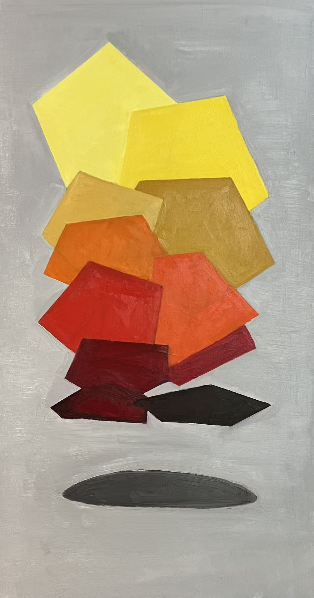
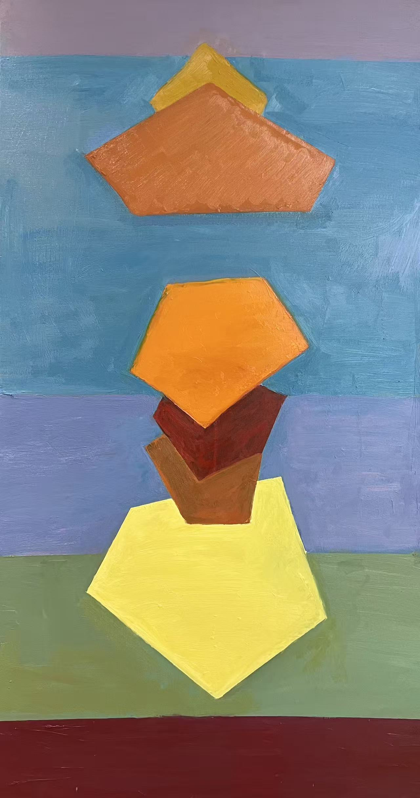
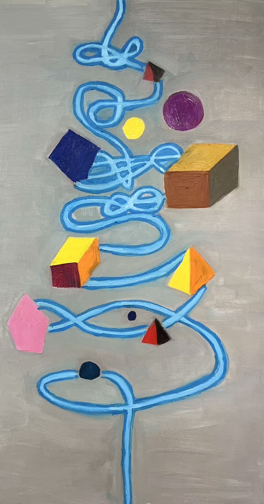
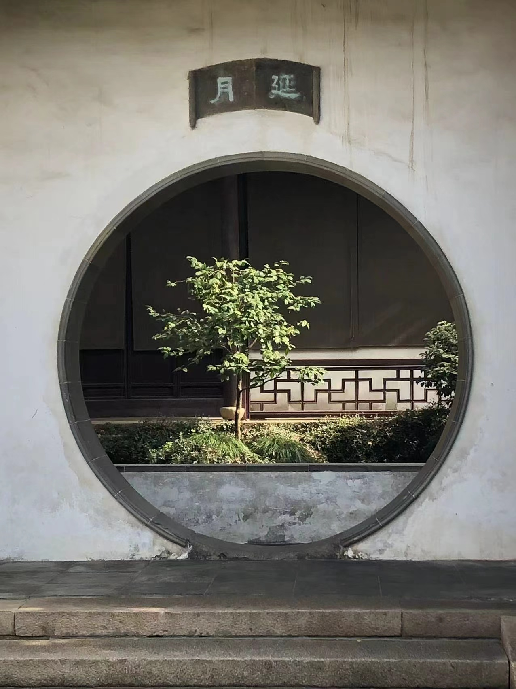
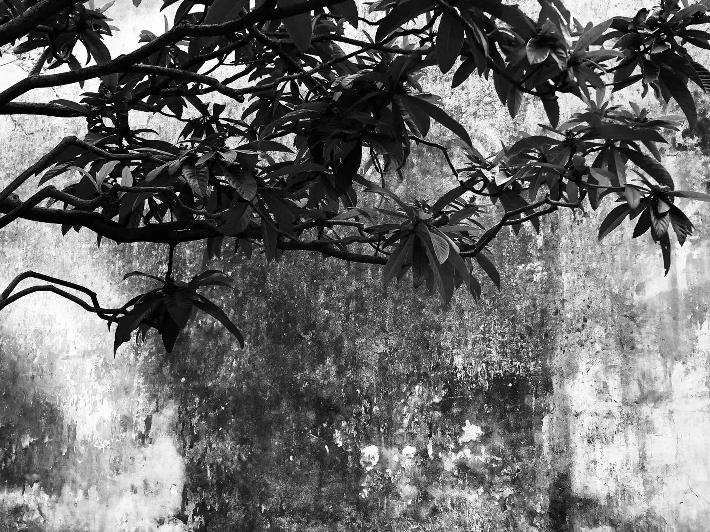
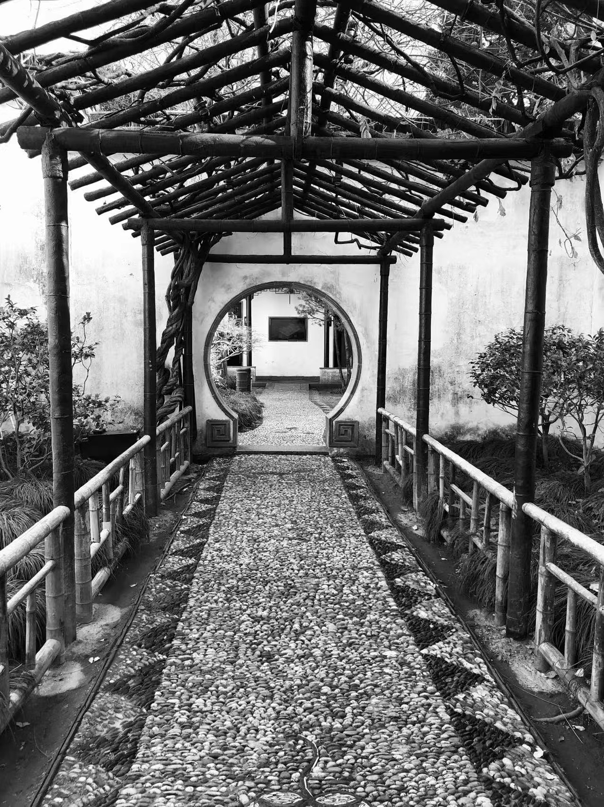
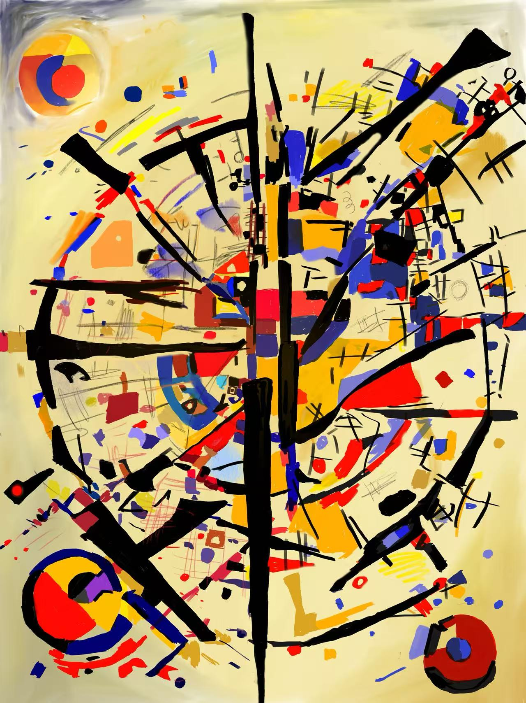

Selected works
2023 — 2025






Chain · Three oil paintings
01 / 03
Music
Music
Recordings and musical projects will appear here.
Nothing published here yet.
Yoyo
Yoyo
A space for tricks, practice, and performances.
Nothing published here yet.
Math
Math
Notes, problems, and mathematical explorations will appear here.
Find me on GitHub ↗ (opens in a new tab)